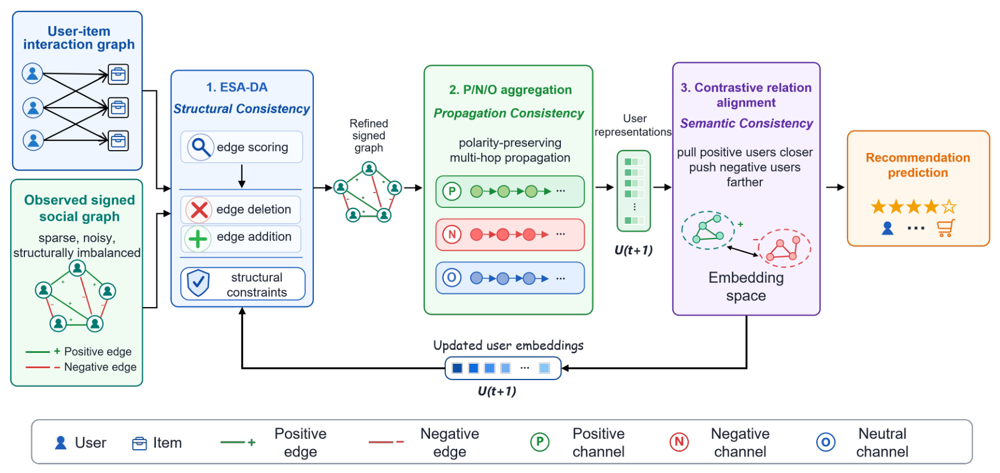
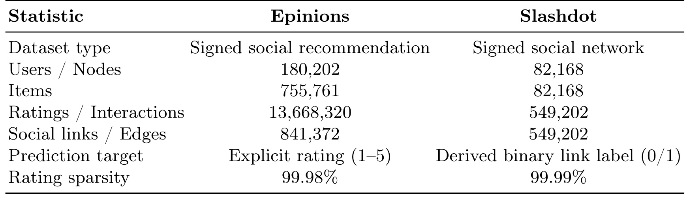
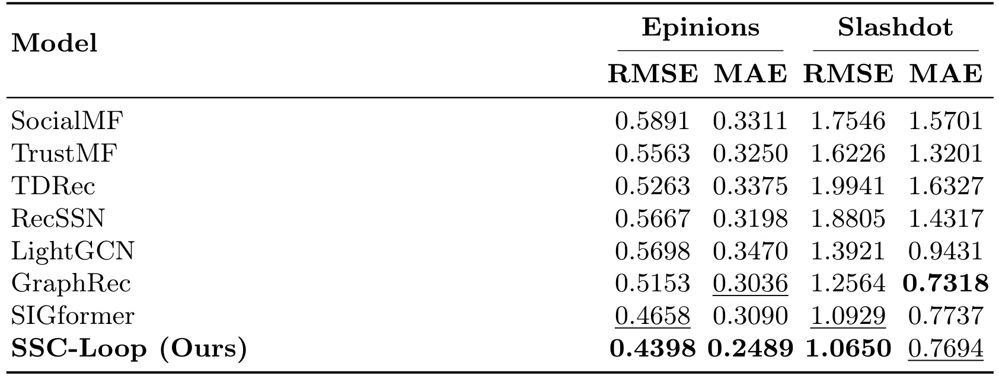
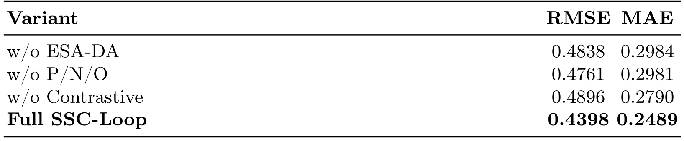
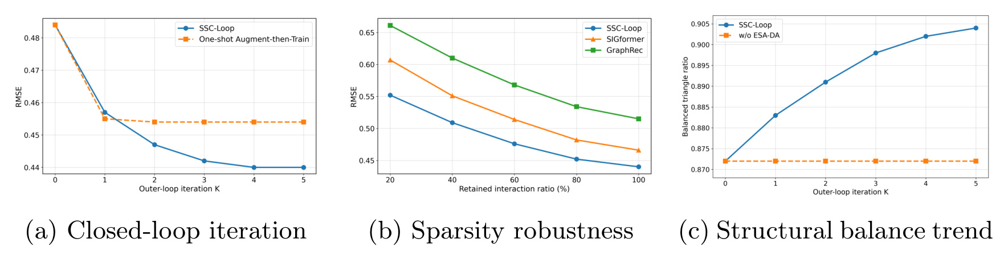

Signed-Graph Recommendation as Structural Consistency Maximization / 将带符号图推荐重写为结构一致性最大化
这篇论文由东北师范大学 Zifan Wang、Siyu Chen 与 Wenzhuo Song 完成，2026 年 7 月 7 日公开于 arXiv。它研究同时含“信任/不信任”边的社会推荐，不再把观测社交图当成不可变输入，而是让图结构与用户表示在训练中交替更新。论文入口为 arXiv:2607.05952，作者公开的 SSC-Loop 代码仓库 已核验可访问。
带符号社会图通常既稀疏又含噪，固定在这张图上做多跳传播，会让不可靠拓扑、正负信号混合和表示几何彼此冲突，最终从稀疏或错误关系中学到有偏用户表示。现有方法缺少一条让图结构与可信社会语义相互修正的闭环。
1. 背景和问题
1.1 从普通社会推荐到带符号社会推荐
普通社会推荐把用户—物品交互与用户—用户关系结合起来：评分、点击或购买说明“用户喜欢什么”，朋友、关注或信任关系则提供“哪些用户可能具有相近偏好”的侧信息。SocialMF、TrustMF 一类方法通常把社会相连用户的表示拉近，GraphRec 等图模型进一步沿社交边传播高阶邻域信息。这个假设在只有正关系的图上比较自然，但真实社区并不只有朋友或信任，还存在屏蔽、反对、不信任与 foe。若把负边也当成同质邻居聚合，模型会把本来应该分开的用户混在一起；若完全丢弃负边，又浪费了显式反偏好和群体边界信息。
论文形式化的输入包括用户集合 (U)、物品集合 (I)、带符号社会图 (G_S=(U,E_S)) 与用户—物品矩阵 (R)。一条 ((u,v,s_{uv})) 边的 (s_{uv}=+1) 表示 trust 一类正关系，(s_{uv}=-1) 表示 distrust 一类负关系；目标仍是估计未知偏好 (\hat R_{ui})。因此，边符号不是最终要预测的唯一标签，而是改善用户表示和偏好预测的结构信息。对 Epinions 而言，这个定义对应真实的 1–5 分显式评分；论文另用 Slashdot 做辅助验证，但 Slashdot 没有用户—物品评分，不能直接视作相同口径的推荐数据集。
1.2 三层不一致不是三个孤立故障
作者把现有 signed recommendation 的困难拆为 结构、传播、语义三层不一致。结构不一致指观测图不能保证忠实表达社会语义：误连边会把无关用户绑在一起，漏边会切断可靠关系，度数极端和孤立点会使聚合尺度失衡，而不平衡的带符号三角形又可能违背“朋友的朋友”“敌人的敌人”等结构平衡先验。这里的关键不是观测边一定错误，而是现实采集到的边只是一份带选择偏差和噪声的代理，不应被默认成真值拓扑。
传播不一致发生在消息经过多跳邻域时。若正、负、中性或不确定信号进入同一聚合流，正负贡献可能相消，也可能在奇偶路径中发生非预期的符号翻转。即使第一跳边符号清楚，第二、第三跳的组合关系也不再能由普通 GCN 的无差别平均表达。最终结果是模型看似使用了 signed graph，却没有在传播算子中持续保存 signed logic。
语义不一致则落在 embedding geometry：正边连接的用户应相对接近，负边连接的用户应相对远离，但只优化评分误差并不会自动保证这一点。更麻烦的是三层故障会互相放大。噪声边先扭曲传播，扭曲后的表示又无法反映正负关系；若再依据这些表示理解用户相似性，模型可能进一步确认最初的错误。作者因此没有把三层问题做成三个独立正则项，而是提出“当前表示修图—在新图上传播—用关系对齐修表示—再反馈修图”的共演化路线。
1.3 为什么固定图与一次性增强仍不够
已有 signed recommendation 往往把图当作固定条件：训练可以更新参数，却不能质疑一条边是否可靠，也不能恢复可能缺失的关系。一次性预处理或 augment-then-train 虽能在训练前编辑图，但增强所依据的表示通常还不成熟，后续学到的新表示也不能反过来纠正第一轮图编辑。SSC-Loop 试图补上的正是这条反馈通路：图不是纯数据常量，而是一个受当前模型状态、度数、连通性与结构平衡共同约束的训练状态。
这项工作与推荐系统的直接关系在于，显式评分的稀疏度极高，社会边可能成为关键侧信息；如果侧信息本身不可靠，传播越深不一定越好。它对大模型个性化也有可迁移价值：用户记忆、偏好冲突和关系型 RAG 同样会遇到“存储结构有噪声—传播或检索放大噪声—表示又反过来确认错误”的反馈风险。不过论文只验证了静态带符号图和低维推荐表示，并未直接证明该闭环可无修改迁移到文本记忆、动态图或在线服务。
还要区分“结构不一致”和“观察不到的真值”。Epinions 的 trust/distrust 是用户主动表达的社会态度，它与评分偏好有关，却不是偏好相同与否的完美标签：两位互相信任的用户仍可给同一物品不同分，两位互不信任的用户也可能在某些品类上意见一致。SSC-Loop 用物品条件上下文评边，正是为了避免只凭社交符号推断推荐相似性；但其后使用的 structural balance 又是一种社会结构先验。若社区里存在阵营重叠、讽刺关系、时间变化或“对人不对事”的负边，局部三角形不平衡不一定等于数据错误。因此这篇论文真正解决的是“在给定先验与验证目标下提高一致性”，不是恢复唯一客观的真实社会图。
此外，三层不一致对应不同的误差传播时间尺度。结构错误在训练开始前已经存在；传播错误会随 GNN 层数和路径组合累积；语义错误则被推荐损失逐步固化。只在最后加一个 embedding regularizer，无法撤回早期沿错边传播的消息；只在输入端清洗一次图，又无法使用后期成熟表示发现新错误。闭环的必要性来自这种时序差异，而不仅是模块数量更多。也正因如此，外循环的初始化、每轮编辑幅度与停止条件会决定系统是在逐步纠错，还是把暂时的表示偏差写成越来越稳定的拓扑偏差。
2. 方法
2.1 一致性表述与闭环总览
SSC-Loop 的输入有两条支路：用户—物品交互图先给出偏好相关的种子表示，观测 signed social graph 则提供正负社会关系。方法依论文顺序依次执行三个模块：ESA-DA 负责 structural consistency，P/N/O 聚合负责 propagation consistency，contrastive relation alignment 负责 semantic consistency。最重要的设计不是把三个模块串一次，而是把更新后的用户表示送回 ESA-DA，形成外层迭代。

Figure 1 要沿着两条方向读。上方从左向右是一次表示学习：交互图与观测 signed graph 进入 ESA-DA，低置信边被删、候选高置信边在结构约束下加入，产生 refined signed graph；P/N/O 随后把正、负和中性关系放进不同通道做多跳传播；对比关系对齐再把正边用户拉近、负边用户推远，得到用于推荐预测的表示。下方从右向左的箭头才是 SSC-Loop 区别于普通 pipeline 的地方：本轮表示 (U^{(t+1)}) 返回图编辑器，影响下一轮边置信度和候选关系。也就是说，图结构影响表示，表示又影响下一版图结构。图中三种 consistency 不是三个并列口号，而是分别对应“编辑什么图”“如何传消息”“表示空间应满足什么关系”的可操作约束。
这个闭环也带来一个必须正视的风险：若早期表示很差，kNN 候选和边置信度可能把错误写回图中，形成自我强化。论文用度数上限、连通性保护、结构平衡保护和验证集早停抑制风险，但没有给出离散图编辑下固定连续目标的单调收敛证明。因此更准确的理解是一个 EM-style 交替优化过程，而不是对同一个光滑目标做保证收敛的梯度下降。
2.2 ESA-DA：从当前表示反推更可信的带符号拓扑
ESA-DA 先为已观测边计算 item-conditioned compatibility。候选邻居 (v) 充当查询，用户 (u) 交互过的物品 (i\in I(u)) 充当上下文；物品表示 (z_i) 与 (v) 的表示 (e_v) 决定注意力，再聚合成“从 (v) 的角度看 (u) 的物品偏好” (c_{v|u})。若 (u) 没有交互，论文令 (c_{v|u}=e_v)。核心关系为：
符号解释：(e_u,e_v) 是用户表示，(z_i) 是物品表示，(\alpha_{ui}^{(v)}) 是以 (v) 为条件的物品注意力，(c_{v|u}) 是条件上下文，(r_{uv}) 是边兼容度，(\tau) 是温度，(\sigma) 是 sigmoid。(p^+) 与 (p^-) 只用于正边、负边各自的排序选择，论文明确不把它们解释成经过校准的关系概率。已观测正边按 (p^+) 从低到高找删除候选，已观测负边按 (p^-) 从低到高找删除候选；这使“边的原始符号”和“当前表示是否支持该符号”同时参与判断。
增加边不能枚举所有 (O(|U|^2)) 非边。ESA-DA 在归一化用户表示的 kNN 中生成未观测候选，用普通余弦相似度打分并分别维护正、负 Top-(K_c) 候选池：
符号解释：(\bar e_u) 是单位化用户向量，(\tilde r_{uv}) 是未观测 pair 的相似度，(q^+,q^-) 是新增正边或负边的候选排序分数。这里存在一个值得注意的非对称：已观测边评分利用了物品条件上下文，未观测边候选为了可扩展性使用归一化 embedding kNN。后者更便宜，却也会继承当前表示的近邻偏差；长尾用户、交互极少用户或早期表示塌缩时，真正缺失的关系可能根本进不了候选池。
高分候选还要经过三类 guard。正负度数上限 (d_{\max}^{+},d_{\max}^{-}) 防止少数节点变成 hub；删除边时要求两端仍至少保留 (\delta_{\min}) 度，防止产生孤立点；新增边则检查带符号三角形是否更不平衡。令 (A_{\mathrm{abs}}) 为去掉符号的邻接矩阵，(A_{\mathrm{sgn}}) 为带符号邻接矩阵，二跳共现与增量失衡写成：
符号解释：(s\in{+1,-1}) 是拟新增边符号；(M_{\mathrm{abs}}^{(2)}) 计两跳共同路径数量，(M_{\mathrm{sgn}}^{(2)}) 同时编码两跳路径的符号乘积；仅当 (\Delta_{\mathrm{neg}}\le 0) 时接受候选。直觉是鼓励补全与局部 signed balance 相容的 motif，压制让“不平衡三角形”增多的编辑。但这是局部二跳保护，不等于全局最优，也可能把真实世界中本来就存在的冲突关系误判为噪声。编辑完成后得到对称 refined signed adjacency；ESA-DA 本身不直接改 embedding，而是通过下一轮在新图上的传播和损失优化间接改变表示。
2.3 P/N/O：极性保持的高阶传播
图被精化以后，模型先在用户—物品图上做均值聚合，产生尚未显式编码正负极性的 interaction-aware seed。论文把用户初始表示与物品邻域聚合拼接：
符号解释：(h_u^{(0)}) 与 (h_i^{(0)}) 分别是用户、物品初始表示，(\widetilde A_{ui}) 是归一化用户—物品交互算子，(\Vert) 表示拼接，(E) 是后续 signed propagation 的种子。这样，社会传播不会脱离推荐目标单独学习，而是从已经包含物品偏好的用户状态开始。
随后，边同时按符号与 embedding similarity 划入 Positive、Negative、Neutral 三个通道。正边且语义相似的 pair 进入 P，负边且语义相异的 pair 进入 N，证据弱或模糊的关系进入 O。O 的意义不是“零边”，而是给不宜被强行解释成可靠正/负关系的消息留出缓冲通道，避免它们直接污染极性明确的聚合流。多跳传播维护 (P^{(l)},N^{(l)},O^{(l)}) 三套用户矩阵，并以各自归一化传播矩阵 PCM、NCM、OCM 控制尺度。论文明确给出的正负更新是：
符号解释：(P^{(l)},N^{(l)},O^{(l)}) 是第 (l) 层三个通道表示，PCM/NCM/OCM 是按对应通道邻接归一化后的传播矩阵。正通道接收“正边上的正状态”和“负边上的负状态”，负通道则接收“负边上的正状态”和“正边上的负状态”，借此编码 signed path 的组合逻辑；O 通道的具体聚合在论文中只给出概念表达，没有与 P/N 同等细化的闭式公式。这个缺口会影响精确复现：读者需要以作者代码确认 OCM 构造、通道阈值和层间合并方式，不能仅凭论文把 Aggregate-O 补成任意平均。
2.4 Contrastive Relation Alignment：把边符号写进表示几何
只靠分通道传播，最终 embedding 仍不一定在几何上满足“正近负远”。论文在同一视图内加入 signed contrastive loss。令 (c=\cos(e_u,e_v))，边符号为 (s)，margin 为 (m>0)：
符号解释：正边的 (1-c) 在余弦接近 1 时最小；负边只有在 (c\le -m) 后才不再受惩罚；(\mathcal L_{\mathrm{rec}}) 是推荐预测损失，(\alpha) 控制预测与关系几何的权衡。它让“边编辑器认为可靠的符号”进入 embedding 目标，也让下一轮 ESA-DA 获得更可分的相似度空间。风险同样形成闭环：若精化图仍含错符号，contrastive loss 会主动把错边写进几何。因此 (\alpha)、margin 与图编辑强度不能各自孤立调参，应在相同验证协议下联合控制。
2.5 Consistency Feedback Loop：训练外循环与推理阶段
训练采用交替策略。第一步固定模型参数，用当前用户表示评分已观测边与 kNN 非边，在 degree、connectivity、balance guards 下离散编辑图；第二步固定这版 refined graph，执行 P/N/O 传播与关系对比对齐，最小化总损失以更新参数。新表示进入下一次 outer loop，最多执行 (K) 轮。因为边的删除/添加是离散操作，作者不声称每轮都让同一个连续目标严格下降，而是每轮在验证集上评估，超过 patience 不再提升或达到最大 (K) 时停止，并选择 best validation checkpoint。
训练与推理必须分开理解。 ESA-DA 的候选生成、图编辑、P/N/O 传播与参数更新属于训练期的外循环；部署推理时使用训练选定的模型状态与精化图表示计算 (\hat R_{ui})，论文没有要求对每个用户—物品请求重新运行 (K) 轮图编辑。若线上社会图持续变化，如何增量维护 kNN、如何避免离线精化图陈旧、一次外循环的时间和内存成本，论文没有给出服务级评测。因而它当前更像一个离线训练框架，而不是已经证明可低延迟在线更新的完整系统。
3. 实验结果
3.1 两个数据集、两个不同预测任务
Epinions 是论文的主 benchmark：180,202 个用户、755,761 个物品、13,668,320 条评分和 841,372 条带符号社会边，预测目标为 1–5 分显式 rating。Slashdot 只有 82,168 个节点与 549,202 条 friend/foe 边，没有真实物品和评分。作者把同一批节点放在派生交互矩阵两侧：源节点作为 user，目标节点作为 pseudo-item；存在有向 friend/foe link 的 pair 记为 (R_{ij}=1)，从原图中完全未连接的 pair 采样为 0。friend/foe 的正负极性不作为 (R) 的预测标签，而只保留在 signed social graph 中供传播与结构建模。

Table 1 最值得看的不是数据量，而是 Prediction target 一行。Epinions 的误差来自真实 1–5 分评分，属于 signed social rating prediction；Slashdot 的误差来自“是否存在连接”的 0/1 派生标签，属于 link-existence reconstruction。Slashdot 表中的 Items=82,168 只是把目标侧节点当 pseudo-item 后得到的矩阵维度，并不表示存在 82,168 个商品。两者 Rating sparsity 分别为 99.98% 和 99.99%，说明稀疏性都极强，但稀疏对象的业务含义并不相同。因此，Slashdot 只能回答“方法能否利用 signed structure 支持派生连接重构”，不能作为另一套真实推荐评分结果，也不能用来声称模型改善了 friend/foe 符号分类。
Epinions 将观测评分随机按 70%/10%/20% 划分训练、验证、测试，五个随机种子重复后报平均值。Slashdot 沿同一比例划分已观测有向边，验证和测试边在训练图 (G_S^{\mathrm{train}}) 构建前移除，只作为 held-out positive；未连接 pair 的负样本按训练、验证、测试分别采样，验证/测试负样本不进入训练。这个设置避免直接把待评估边泄漏进训练 signed graph，但论文没有给标准差或置信区间，五次均值无法让读者判断小差异的稳定性。
Slashdot 协议还有一个容易忽略的条件：训练 social graph 与训练 interaction matrix 都只由训练边构造，边的存在性形成正标签，边的 friend/foe 极性只进入图传播。模型因而利用“训练边是什么符号”去判断“未见 pair 是否有边”，但不会直接预测该未见边是 friend 还是 foe。这个派生设置能测试 signed structure 是否比无符号图提供更多重构信号，却同时改变了推荐语义、负采样分布和评估损失。若未连接 pair 中包含未来可能出现的边，0 标签本身也只是采样负例，而非稳定的真实不相关。复现实验时应保存每个 split 的边 ID 与负采样种子，否则不同采样集合可能主导 RMSE/MAE 变化。
3.2 Baseline 与主结果
对照方法覆盖三类：SocialMF、TrustMF 是正关系社会推荐基线；TDRec、RecSSN 显式建模 trust/distrust；LightGCN、GraphRec、SIGformer 属于图推荐，其中 SIGformer 是更强的 sign-aware 传播对手。所有方法使用相同预处理、split 与指标。两个数据集都报 RMSE 和 MAE，但 Slashdot 模型输出 real-valued score，且没有把预测裁剪到 ([0,1])，所以即使标签是二值，RMSE/MAE 仍可能超过 1；这些数值不能按二分类准确率、AUC 或概率校准来解读。

在 Epinions 主任务上，SSC-Loop 的 RMSE/MAE 为 0.4398/0.2489。RMSE 最强基线 SIGformer 为 0.4658，对应相对下降约 5.6%；MAE 最强基线其实是 GraphRec 的 0.3036，而非 SIGformer 的 0.3090，相对下降约 18.0%。这组结果支持“同时修图、保极性传播、做语义对齐比固定图上的单一 signed encoder 更有效”，但不能仅靠一张表判断三个模块各自贡献，仍需结合消融。
Slashdot 上 SSC-Loop 的 RMSE 1.0650 最好，优于 SIGformer 的 1.0929；MAE 0.7694 只排第二，GraphRec 的 0.7318 更低。RMSE 改善而 MAE 未最优，可能说明模型减少了一部分大误差，却没有在平均绝对偏差上统一占优。更重要的是，这一列衡量派生 link-existence 的实值重构，不是显式评分推荐，也不是 friend/foe sign prediction。因而证据应保守表述为：SSC-Loop 能利用 signed graph 改善某些连接重构指标，但辅助结果没有证明跨数据集同口径的推荐优势。
论文没有报告训练时间、显存、图编辑边数、每轮 kNN 成本或在线延迟。ESA-DA 对非边采用 kNN 与 Top-(K_c) 缩小搜索空间，理论上避免全 pair 枚举，但在 180k 用户规模上建立和多轮刷新近邻仍可能是主要成本。若要评估工程可行性，至少需要外循环轮耗时、候选池规模、删除/新增比例及最终图度分布；目前主表只能回答效果，不能回答效率。
从 baseline 公平性看，论文声明统一预处理、划分和指标，这比直接引用各论文原数字更可靠；但不同模型是否采用同等 embedding 维度、层数、参数量、搜索预算与早停 patience，正文没有列出完整表。特别是 SSC-Loop 多了 kNN 图编辑和外循环，若只统一最终 metric 而不统一调参预算，效果比较与系统成本比较仍是两件事。Epinions 的大幅 MAE 改善较难仅由随机波动解释，但没有方差时仍不能做显著性判断；Slashdot 上 RMSE 第一、MAE 第二的分裂更要求报告逐种子分布和 error quantile，而不是只看均值。
3.3 消融：三层一致性是否互补
作者在 Epinions 上分别去掉 ESA-DA、P/N/O 与 Contrastive。三个变体都比 Full SSC-Loop 差，说明最终收益不是某一个模块完全包办。去掉 ESA-DA 时 RMSE/MAE 变为 0.4838/0.2984；去 P/N/O 为 0.4761/0.2981；去 Contrastive 为 0.4896/0.2790。

Table 3 揭示了一个比“任一模块都有用”更细的现象。按 RMSE 看，去 Contrastive 的退化最大，从 0.4398 上升到 0.4896；去 ESA-DA 次之，上升到 0.4838；去 P/N/O 为 0.4761。按 MAE 看，去 ESA-DA 与去 P/N/O 的 0.2984/0.2981 明显更差，去 Contrastive 的 0.2790 相对温和。也就是说，semantic alignment 可能更影响大误差尾部，结构精化和极性传播对一般样本的绝对误差更关键。论文正文把 ESA-DA 称为最大退化来源，但表中若只看 RMSE，最差其实是 w/o Contrastive；应按指标分别陈述，而不是把两个指标压成单一排名。
该消融仍有解释边界。它只做“移除整个模块”，没有分解 ESA-DA 的 item-conditioned scoring、kNN addition、edge deletion、degree/connectivity/balance guards，也没有分别评估 P、N、O 通道或 (\alpha,m,\tau,K_c) 的敏感性。因此，它能证明三个大组件互补，却不能确定具体收益来自哪条 guard 或哪个通道。尤其 O 通道的公式描述较粗，缺少更细消融会增加复现不确定性。
3.4 迭代闭环、稀疏鲁棒性与结构平衡
Figure 2 把进一步分析拆成三个问题：反复共演化是否真的优于只增强一次；用户—物品监督减少时 signed social information 是否仍有价值；ESA-DA 是否改变了图的结构平衡，而非只做黑盒预测拟合。

左图比较 closed-loop 与 one-shot augment-then-train。二者从 (K=0) 的 RMSE 约 0.4842 起步，第一轮都快速降到约 0.455；one-shot 随后基本停在 0.4540 附近，闭环则继续在第 2–4 轮下降并于 (K=4) 到 0.4398，之后趋于平台。这是“更新表示再反馈修图”优于静态增强的直接证据，也解释了为何验证集早停必要：收益集中在前几轮，继续迭代不保证无限改善。
中图在固定测试集上只保留 20%、40%、60%、80%、100% 的训练交互。SSC-Loop 在五个保留比例上都优于 SIGformer 与 GraphRec，20% 时优势仍存在，说明当 rating supervision 很少时，经过精化的 signed social structure 能提供额外信息。不过这只是交互稀疏鲁棒性，不是显式图噪声鲁棒性。论文没有系统注入错符号、随机边、删边、hub 或对抗扰动来测试 ESA-DA 的纠错极限，所以不能把中图写成“证明对任意结构噪声稳健”。
右图跟踪 balanced triangle ratio。完整 SSC-Loop 从 0.8721 上升到 0.9040，w/o ESA-DA 基本停在起点，说明图编辑确实让局部 signed motif 更符合结构平衡。这个证据把预测提升与结构变化联系起来，但也有因果解释限制：balance ratio 提升是 guard 直接优化的方向之一，因此“指标变好”说明约束被执行，不自动证明所有新增/删除边都更接近真实社会语义。更可靠的验证还应检查被编辑边的人工或时间后验准确率、不同用户度区间的编辑比例，以及 balance 与 rating error 是否在用户级同步改善。
综合主表、消融和 Figure 2，论文的证据链是完整但仍偏离线的：Epinions 给主任务效果，Table 3 说明三大模块互补，闭环曲线说明 iterative co-evolution 优于 one-shot，稀疏曲线说明社会图在低交互监督下仍有贡献，balance 曲线说明图编辑具有结构意义。缺失项包括置信区间、效率、超参数敏感性、显式结构噪声注入、动态图与线上评测。这些缺失不会否定当前结果，但限定了“有效”的范围。
还可以把三组分析组合成更严格的因果假设：若闭环收益确实来自“表示帮助修图”，则每轮验证误差下降应与被编辑边质量、balanced ratio 和长尾用户误差同步变化；当前论文只分别展示总体 RMSE 与总体 triangle ratio，没有给逐轮边编辑精度或用户分桶相关性。若收益主要来自更强的正则化或额外训练轮次，one-shot 对照虽能排除一部分解释，却未完全控制等计算预算。一个更有说服力的实验会固定总训练步数，并比较原图继续训练、随机等量编辑、只删边、只加边、一次编辑和多次反馈，从而把“更多计算”“结构约束”和“闭环反馈”拆开。
4. 总结
4.1 我的判断
SSC-Loop 最有价值的不是又增加一个 signed GNN，而是把观测社会图从固定输入改成可审计、受约束的训练状态。ESA-DA 负责让当前表示质疑边，P/N/O 负责让多跳消息不丢极性，contrastive alignment 负责让表示几何与边符号一致，外循环再让新表示改进下一轮图。Epinions 的主结果和闭环曲线支持这条设计，Slashdot 则只提供 signed structure 可用于派生连接重构的辅助证据。把两者严格分开后，论文贡献更清楚，也避免把辅助任务包装成第二套真实推荐结果。
对工程系统而言，最可迁移的思想是“关系侧信息需要反馈式质量控制”。在社交推荐、知识图谱推荐、用户记忆检索或带赞成/反对关系的个性化模型中，可以用模型状态提出结构修订，再用连通性、度数和业务规则守住边界。但上线前不能只看总 RMSE：应分别监控被删/新增边、长尾用户覆盖、hub 变化、不同关系符号的误差，以及外循环是否对少数群体产生不均衡编辑。
我更倾向于把 refined graph 视作一个带版本、可回滚的中间模型工件，而不是覆盖原始社交事实。原始边、候选分数、触发的 guard、编辑原因、外循环轮次和验证 checkpoint 应全部留痕；若一轮后线上或离线护栏变差，可以回到上一版图。这样做也能把“模型推测的关系”与“用户真实表达的关系”分层保存，避免下游系统把算法新增边误认为真实 trust/distrust。论文没有讨论这一治理问题，但任何涉及负关系的真实系统都需要它。
4.2 局限、风险与后续跟进
目前至少有六项边界。第一，只有 Epinions 是显式评分主任务，Slashdot 是派生 link-existence，跨域外推证据有限。第二，结构平衡是强先验，现实冲突群体未必满足局部 balanced triangle，guard 可能删掉真实但“不平衡”的关系。第三，闭环可能自我强化早期表示偏差，尤其影响交互极少、近邻质量差的用户。第四，论文没有报告 kNN 刷新、边编辑和多轮训练的时间/内存成本，也没有在线延迟。第五，O 通道聚合、边划分阈值和若干实现细节需依赖代码确认。第六，实验缺少误差条、显著性、显式边噪声注入、动态图和线上 A/B，现有“鲁棒性”只覆盖训练交互稀疏。
下一步值得做四类跟进：
- 复现任务口径。 先在 Epinions 完整复现 70/10/20 split 与五种子均值；对 Slashdot 单独标注 derived link-existence，并核查 held-out link 是否在建图前真正移除，防止结构泄漏。
- 拆解 ESA-DA。 分别关闭 deletion、addition、item-conditioned scoring、degree/connectivity/balance guard，记录编辑边精度、度分布与 balanced ratio，而不只看总 RMSE。
- 做结构噪声压力测试。 对正负边注入 sign flip、随机增删与 hub 扰动，并按用户交互稀疏度分桶，观察闭环何时纠错、何时开始放大错误。
- 补齐系统成本与停止准则。 记录每轮 kNN、候选筛选、图编辑、传播的耗时和内存，比较 one-shot 与 closed-loop 的单位收益成本；同时测试 (K,\tau,K_c,\alpha,m) 对验证早停和图稳定性的影响。
在这些验证完成前，SSC-Loop 应被视为一套证据充分的离线 signed social recommendation 方法原型，而不是已经证明可直接在线更新的社会图基础设施。它最可信的结论是：在 Epinions 的显式评分任务上，受结构约束的图精化、极性保持传播和 signed semantic alignment 形成互补闭环，并在交互稀疏条件下保持优势；更广的动态图、噪声图和服务化结论仍需实验补齐。